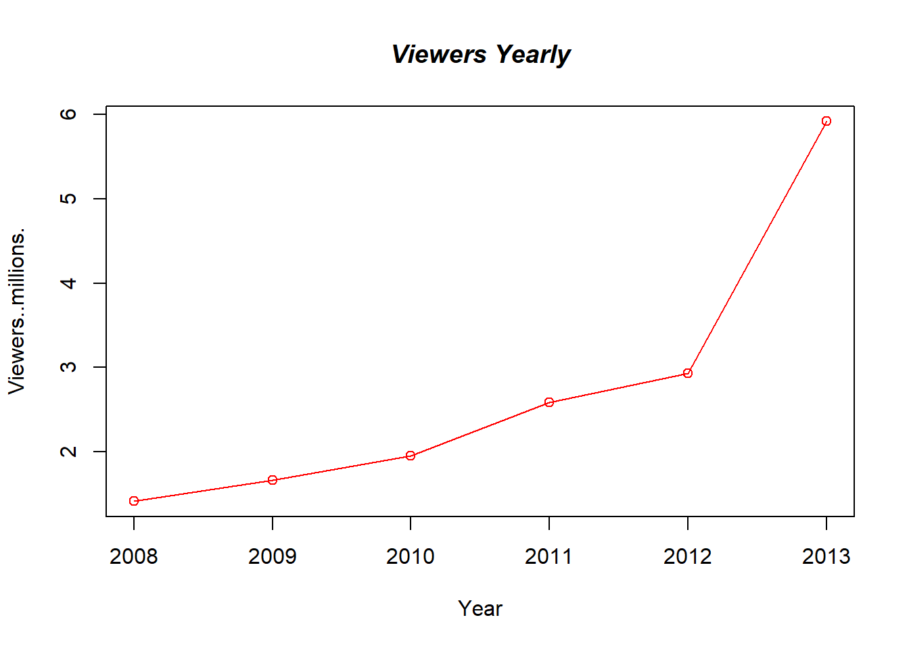
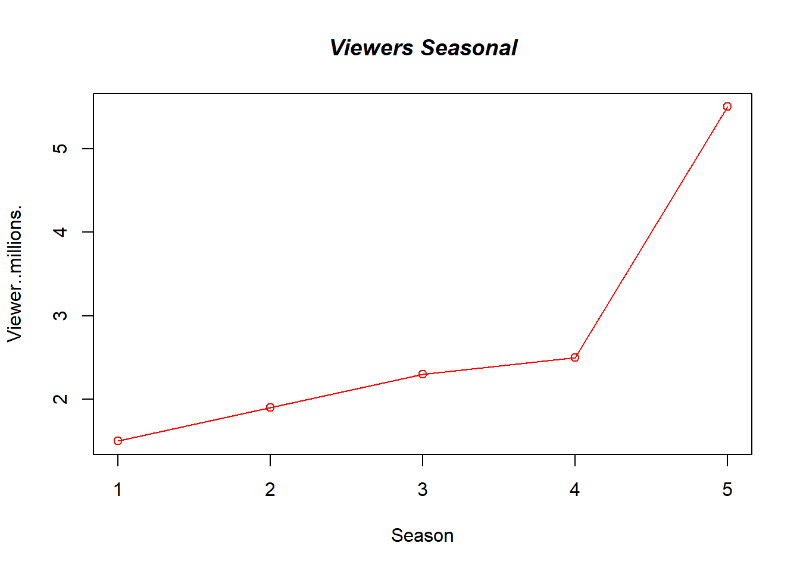

library(rvest)Warning: package 'rvest' was built under R version 4.2.3library(rvest)Warning: package 'rvest' was built under R version 4.2.3Breaking Bad is an American television drama series created by Vince Gilligan, which premiered in 2008 on the cable network AMC. The story is about Walter White (Bryan Cranston), a 50-year-old high school chemistry teacher in Albuquerque, New Mexico. After White is diagnosed with terminal lung cancer, he uses his chemistry expertise to cook crystal meth, assisted by his former student Jesse Pinkman (Aaron Paul), to secure his family’s (played by Anna Gunn and RJ Mitte) inheritance before he dies.
During the course of the series, 62 episodes of Breaking Bad aired over five seasons. The pilot episode was first aired on January 20, 2008, and the series finale, was broadcast on September 29, 2013. Breaking Bad: Original Minisodes, which consisted of several one- to five-minute clips, released 17 short episodes over the course of three years throughout Breaking Bad’s run.
On October 11, 2019, Netflix released El Camino: A Breaking Bad Movie, a feature film continuation of Breaking Bad, written and directed by Gilligan. An additional short film Snow Globe: A Breaking Bad Short was released on February 17, 2020.Wikipedia
Breaking Bad’s IMDB rating is 9.5.
Based on 2008 statistics, Breaking Bad had 1.41 millions of viewers.
Based on 2010 statistics, number of viewers had increased to 1.95 millions.
Based on 2013 statistics, Breaking Bad had 5.92 millions of viewers.
The series received numerous awards and nominations, including 16 Primetime Emmy Awards and 58 nominations, including winning for Outstanding Drama Seriesin 2013 and 2014.
It also won two Peabody Awards and one in 2013.
BreakingBad <- read.csv("BB data.csv")
plot(BreakingBad,type="o", col="red")
title(main="Viewers Yearly", col.main="black", font.main=4)
BreakingBad1 <- read.csv("BB data seasonal.csv")
plot(BreakingBad1,type="o", col="red")
title(main="Viewers Seasonal", col.main="black", font.main=4)
Based on this data, it can be told that the number of viewers tend to increase year by year and every season. Fourth season had a drop slightly. Finally, the viewership had a peak in the last season and year 2013.